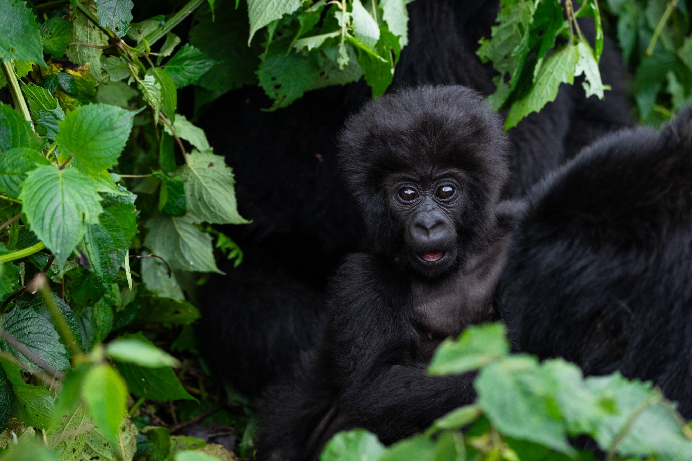
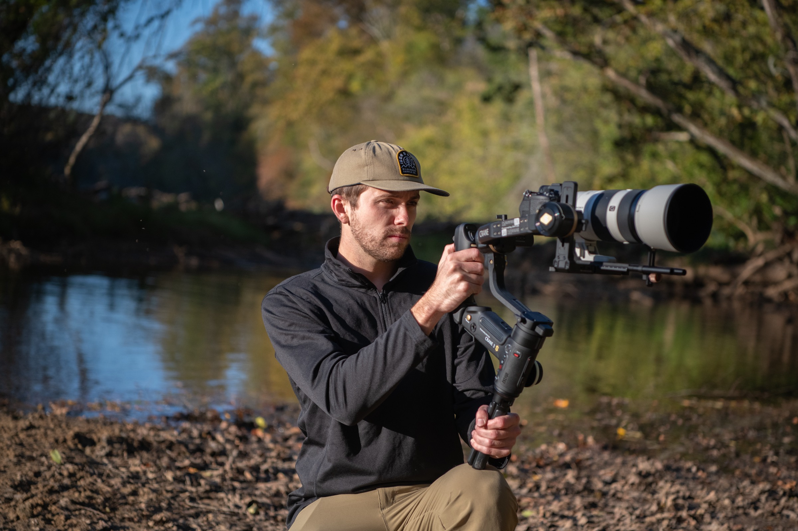
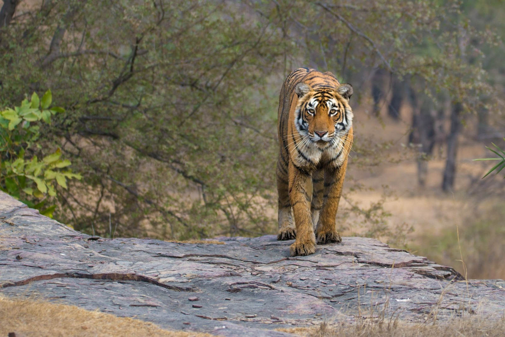
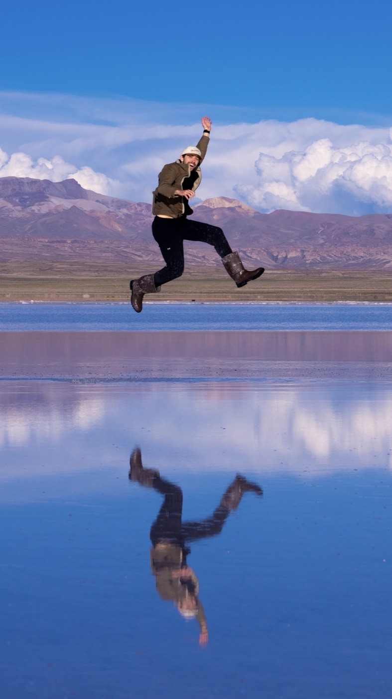
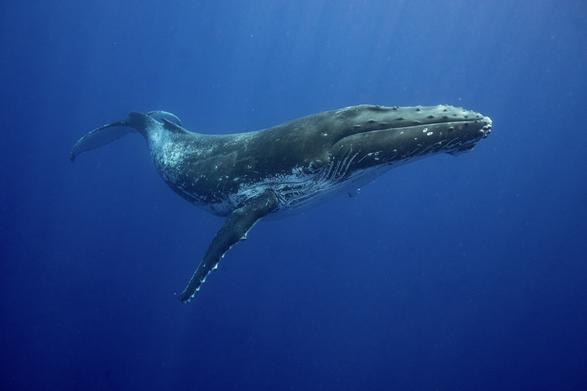

Scholarships and mentorship.
Scholarships, mentors and creative resources for aspiring wildlife photographers, filmmakers and creators.

Stories that bring the natural world closer.
And the people who tell them.
Our purpose
Follow the Wild’s mission is to inspire the next generation of wildlife storytellers and foster a deeper connection between people and the natural world through education and storytelling.
A remarkable animal. A forest close to home. A changing ocean. We bring together the people who know these stories and the creators who can help others discover them.
Why we exist ↗What we’re building
Scholarships, mentors and creative resources for aspiring wildlife photographers, filmmakers and creators.
Pairing emerging creators with scientists, researchers and wildlife professionals to document their work and share it widely.
Free wildlife and nature content, made with schools, educators and youth organizations.
Where stories meet people
A short video can introduce an unfamiliar species. A live conversation can bring a field expert into someone’s home. A longer film can make room for a story that deserves time.
We’re interested in what each format can teach, and in the voices that help people understand wildlife, wild places and our changing climate.
Explore the audience research ↗


